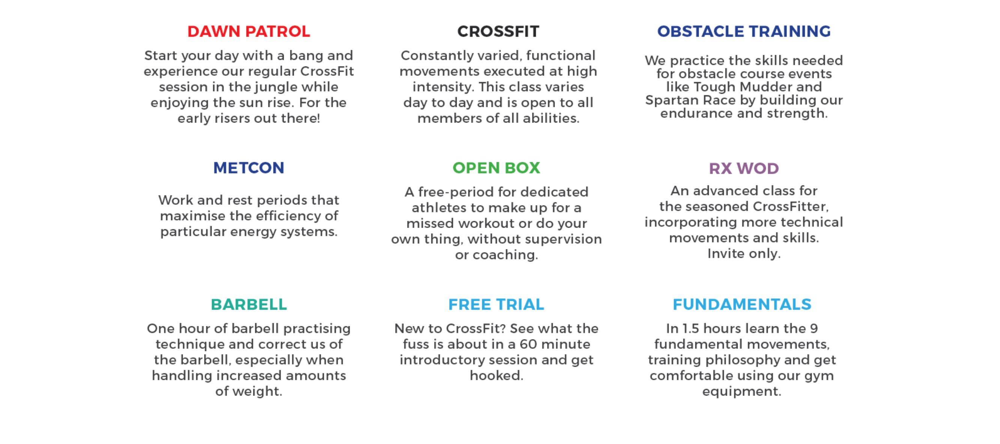

Try out everything we have to offer from technique focussed classes to weight lifting. Find the right class for you!

Workout Of the Day - CrossFit combines so many other elements, one of the key characteristics is a daily workout, hence the “workout of the day”. WODs are determined by our CrossFit Coaches to challenge you with varying exercise selection, so you won't have time to get bored!